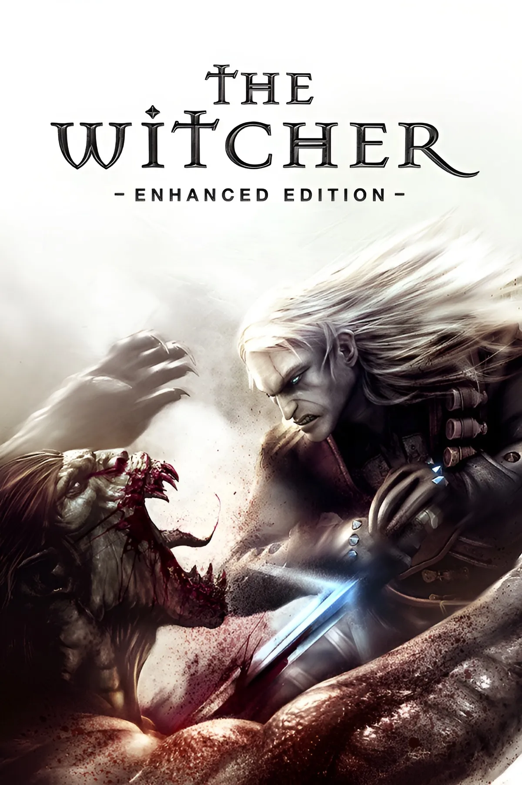
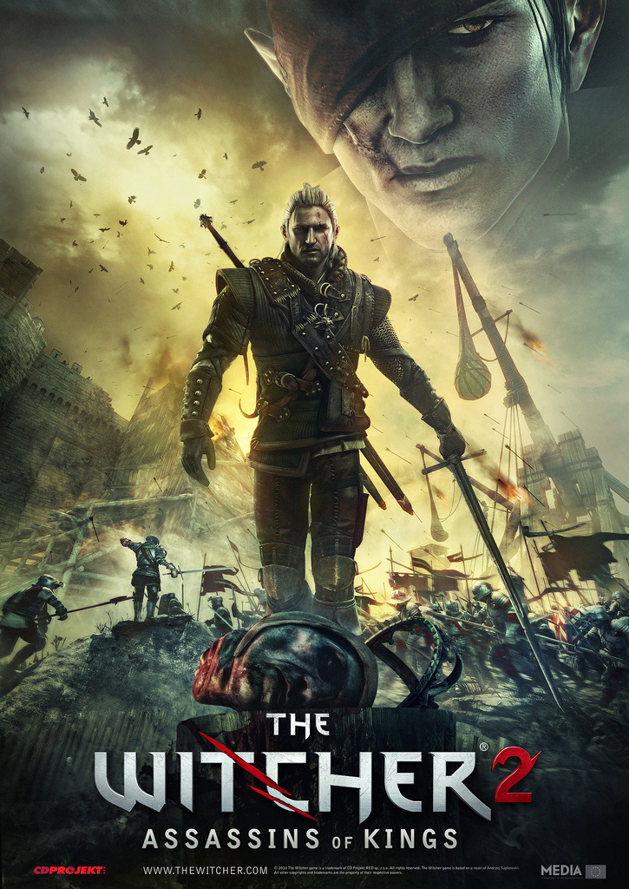
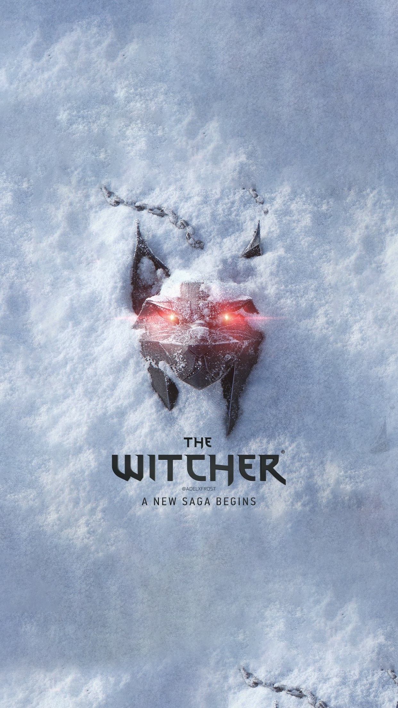

The games
CD Projekt Red's trilogy brought Sapkowski's Continent to life in a way no adaptation had managed before. Below are the three mainline entries plus the upcoming fourth chapter.

- Main story ~35 hours
- Setting Temeria
- Engine Aurora (modified)
- Achievements None (base) — 53 in Enhanced Ed.
The Witcher
Where it all began. Geralt stumbles out of Kaer Morhen with no memory and a world that doesn't particularly care to welcome him back. Rough around the edges? Absolutely. But there's something in those grimy taverns and morally murky quest lines that no amount of technical polish can fake. The Continent feels lived-in from the very first chapter. Stick with it and you'll find one of the most atmospheric RPGs ever made.
Official trailer
Enhanced Edition (2008): Released free to everyone who already owned the game, it added five hours of new content, re-recorded all the dialogue, and ironed out the worst performance issues. If you're coming to this one fresh, don't even think about the original just grab the Enhanced Edition.

- Main story ~25 hours
- Setting Flotsam, Vergen, Loc Muinne
- Engine REDengine
- Achievements 52 (PC) · 50 (Xbox 360)
The Witcher 2: Assassins of Kings
The middle chapter that refuses to feel like one. CDPR came out swinging with a new engine, visuals that put its console-generation rivals to shame, and a story bold enough to actually split in two, depending on who Geralt backs at the end of Chapter 1. It's the shortest of the trilogy, but that restraint works in its favour. The political tension between Temeria, Nilfgaard, and the Scoia'tael still hits harder than most games manage in twice the runtime.
Official trailer
Enhanced Edition (2012): Opened the game up to Xbox 360 players and sweetened the deal for everyone else with several hours of new quests, an Arena mode, and the "Fallen Knights" side story. PC owners got the whole thing at no charge.

- Main story ~50 hours (+30 from DLCs)
- Completionist 200+ hours
- Setting Velen, Novigrad, Skellige, Toussaint
- Achievements 78 (base + DLC)
The Witcher 3: Wild Hunt
The one that changed what people expect from open-world games. Following Ciri across the war-scarred mudflats of Velen, the merchant sprawl of Novigrad, and the cold seas of Skellige never stops feeling like genuine travel. Εach region has its own mood, its own problems, its own reason to stay. The side quests alone put most games' main stories to shame. Then the expansions arrived: Blood and Wine was a gorgeous farewell, and Hearts of Stone is simply one of the best pieces of story DLC ever created.
Official cinematic trailer
Next-Gen Update (2022): Given away free to existing owners it brought ray tracing, noticeably faster load times, reworked textures, new quests and items from the Netflix series. The result feels closer to a remaster than a typical patch. If you haven't played it yet, the Complete Edition is the only version worth picking up. Both expansions and all free DLC included.

- Protagonist Ciri
- Engine Unreal Engine 5
- Announced December 2024
- Release Not yet announced
The Witcher 4
Ciri finally gets the spotlight. After spending three games as the person everyone else is searching for, she steps in as the playable lead of a whole new saga — and the weight of that choice is already obvious from the reveal alone. CDPR said little at The Game Awards 2024, but they rarely need to say much; the Continent speaks for itself. Built on Unreal Engine 5, this is the studio starting fresh while keeping everything that made the world worth returning to.
Unreal Engine 5 Tech Demo
This page will be updated as official details come in. Right now, the reveal trailer and Ciri's role as protagonist are all CDPR have confirmed — everything else is noise. No leaks, no speculation, just what's actually been announced.